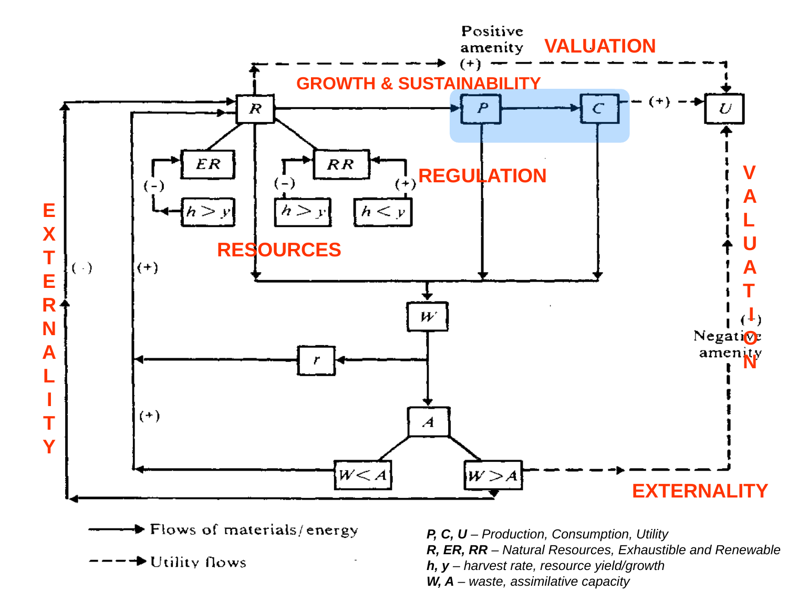

Frame economic assessment questions within source limits
Explanation, worked examples and practice
Useful first: Classify the four environmental functions, Trace material, waste and utility paths, Interpret harvest and waste capacity comparisons
Outcome and conditions
Place the five source topic labels on relevant network relationships, frame resource/waste/amenity questions for an agent-created proposal, and distinguish the original Week1 uploaded introduction/SIS source set from its advertised absent linked Prezi and methods not supplied in that historical case.
Study conditions, assessment scope and sources
Assessment-case scope: the unchanged O004-C1 questions and keys use the original Week1 introduction (00_Intro.pptx), SIS orientation and absent linked Prezi as a frozen historical case. Any retained “current notes,” “introductory framework,” “later,” “missing” or “unready” wording within those items refers only to that original source set. It does not describe active P005 curriculum readiness. Current O005–O013 separately prepare checked Week2 formal externality, instrument and appraisal methods; O014–O019 prepare checked bounded Week3 physical-climate/health/scenario material. The original linked Prezi itself remains absent, and this independent downstream coverage does not certify it. No old item, scoring component, criterion, acquisition route, timing rule or valid historical evidence is broadened or invalidated by this case clarification.
- The economic questions placed on the network
- What the introductory framework establishes
- Week 1 content supplied and content only advertised
Supported/completion work may use the finished note and named figure. Independent and delayed checks use no notes, figures, keys, web, AI or hints; a blank page is allowed. O003 may use a basic calculator for comparisons, without conceptual help. The tutor confirms known access/exposure conditions before scoring independence. Tasks describing a figure may be answered verbally or by drawing; the arrow legend and interpretation must still be produced unaided. The allowed hypothetical contexts/numbers instantiate the notes and add no course claims.
Prerequisites and checks
Check the prerequisites
O004-PRE-O001 v2 (item_version 2). Prerequisite O001. Needed because assessment questions must separate inputs, disposal and direct environmental enjoyment instead of treating all environmental roles as production inputs.
Components probed: identify_four_functions: resource, sink, demand service; distinguish_coexisting_functions through distinct relationships. The full source taxonomy and biospheric examples are not necessary for this assessment-entry check.
Prompt: An assessment proposal lists an environmental input used by firms, cultural enjoyment valued directly by people, and reception of discarded outputs. Identify each function. Explain the error in calling all three resources solely because nature supplies them.
Key and essential reasoning: An input used by firms is a resource; cultural enjoyment is a demand service; discarded-output reception is a sink/assimilative-capacity function. Nature supplies several different relationships. Calling everything a resource erases the input/disposal/direct-enjoyment distinctions; the functions can coexist rather than being mutually exclusive.
Rubric: Pass requires the three assignments and the reason that their relationships differ. Partial means one omitted assignment or explanation without contradiction. Fail means equating direct enjoyment/disposal with resource input solely because they are environmental benefits, or denying coexistence. An insufficiently interpretable response is unscorable; clarify the existing prompt once without supplying an answer.
Conditions and use: Ask this focused diagnostic once before targeted recap, without notes, figures, keys or hints. Record any known relevant exposure; unknown assistance/access makes diagnostic independence unscorable and routes to support. A pass permits the named dependency components for this downstream lesson only; it does not establish the upstream objective's full acquisition or delayed retention. This prompt is a distinct focused item, not the upstream I1/I2 prompt or a substitute for those full acquisition checks. Do not repeat diagnosis after failure.
Repair route: After partial/fail or unscorable conditions, use O001 explanation for the named distinction, then O001 S1. Assess upstream full acquisition with its untouched, distinct I1 and I2 only if that prerequisite acquisition is needed; hide their keys before the response and confirm no exact full-item exposure. This focused diagnostic does not expose either full item's exact scenario, requested whole-capability answer or key. Return to this downstream lesson after the needed dependency is demonstrated; do not present this diagnostic again as fresh learning evidence. If an upstream I item is already exposed for another reason or its bank is exhausted, raise plan_issue rather than improvising a replacement.
O004-PRE-O002 v2 (item_version 2). Prerequisite O002. Needed because an assessment question must distinguish an effect on wellbeing from physical inputs and avoid treating a positive direction as a net-welfare estimate.
Components probed: distinguish_utility_paths: consumption and direct environmental amenities; interpret_signs_and_undefined_symbols: qualitative signs/no net amount; trace_economic_physical_paths only as the material-versus-utility distinction. The full network, K and r are not required for this focused assessment check.
Prompt: A proposal claims that a positive consumption-to-wellbeing arrow is a shipment of materials and is already enough to calculate the whole wellbeing result. Correct the arrow interpretation. Name one other source-supported route to wellbeing and explain what information a positive sign alone lacks.
Key and essential reasoning: Consumption-to-utility is a dashed utility effect, not a solid material/energy shipment. A distinct source-supported route is the positive environmental-resource amenity connection to utility (the excess-waste negative amenity path is also acceptable). A plus gives a qualitative direction, without a magnitude, monetary scale or net-welfare function; the other routes and their unknown sizes mean this arrow alone cannot calculate the overall result.
Rubric: Pass requires utility-versus-material correction, one distinct source-supported wellbeing route and the no-magnitude/no-net-result explanation. Partial means an omitted route or limitation with the core distinction correct. Fail means retaining the material-shipment reading or asserting that a plus alone determines the total monetary/wellbeing result. An insufficiently interpretable response is unscorable; clarify the existing prompt once without supplying an answer.
Conditions and use: Ask this focused diagnostic once before targeted recap, without notes, figures, keys or hints. Record any known relevant exposure; unknown assistance/access makes diagnostic independence unscorable and routes to support. A pass permits the named dependency components for this downstream lesson only; it does not establish the upstream objective's full acquisition or delayed retention. This prompt is a distinct focused item, not the upstream I1/I2 prompt or a substitute for those full acquisition checks. Do not repeat diagnosis after failure.
Repair route: After partial/fail or unscorable conditions, use O002 explanation for the named distinction, then O002 S1. Assess upstream full acquisition with its untouched, distinct I1 and I2 only if that prerequisite acquisition is needed; hide their keys before the response and confirm no exact full-item exposure. This focused diagnostic does not expose either full item's exact scenario, requested whole-capability answer or key. Return to this downstream lesson after the needed dependency is demonstrated; do not present this diagnostic again as fresh learning evidence. If an upstream I item is already exposed for another reason or its bank is exhausted, raise plan_issue rather than improvising a replacement.
O004-PRE-O003 v2 (item_version 2). Prerequisite O003. Needed because assessment framing asks what harvest/growth and waste/capacity measurements are needed, rather than inferring safety or quantitative welfare from labels.
Components probed: compare_like_measurements; interpret_harvest_branches through removal-versus-replenishment; interpret_waste_branches through output-versus-capacity; respect_equality_and_model_limits. This asks for comparison requirements rather than reproducing the full numeric acquisition cases.
Prompt: Before calling a proposed renewable-resource use and its waste handling satisfactory, which two pairs of quantities must be compared in this diagram and on what measurement basis? If either pair is equal, does the supplied strict-branch diagram settle its effect? Explain why the labels renewable and sink do not by themselves establish a precise safe-use level or net wellbeing amount.
Key and essential reasoning: Compare harvest rate h with yield/growth y, and waste W with assimilative capacity A, using comparable quantities over a common time basis within each pair. Harvest versus replenishment and waste versus capacity determine which displayed strict branch can apply; the category names alone do not make the comparisons. Equalities \(h=y\) and \(W=A\) are not specified by the source. No growth function, universal safety threshold, stock-change amount or numerical utility model supplies a precise safe-use or net-welfare figure. The answer does not need an invented numeric case.
Rubric: Pass requires both pairs/common-basis condition, category-versus-comparison reason, unspecified equality and rejection of precise safe-use/net-welfare inference. Partial means one missing requirement or limitation without contradiction. Fail means comparing incompatible bases directly, treating equality as a supplied result, or deriving a safe numerical level or net wellbeing from category labels alone. An insufficiently interpretable response is unscorable; clarify the existing prompt once without supplying an answer.
Conditions and use: Ask this focused diagnostic once before targeted recap, without notes, figures, keys or hints. Record any known relevant exposure; unknown assistance/access makes diagnostic independence unscorable and routes to support. A pass permits the named dependency components for this downstream lesson only; it does not establish the upstream objective's full acquisition or delayed retention. This prompt is a distinct focused item, not the upstream I1/I2 prompt or a substitute for those full acquisition checks. Do not repeat diagnosis after failure.
Repair route: After partial/fail or unscorable conditions, use O003 explanation for the named distinction, then O003 S1. Assess upstream full acquisition with its untouched, distinct I1 and I2 only if that prerequisite acquisition is needed; hide their keys before the response and confirm no exact full-item exposure. This focused diagnostic does not expose either full item's exact scenario, requested whole-capability answer or key. Return to this downstream lesson after the needed dependency is demonstrated; do not present this diagnostic again as fresh learning evidence. If an upstream I item is already exposed for another reason or its bank is exhausted, raise plan_issue rather than improvising a replacement.
Adequate qualifying current or explicitly approved compatible prerequisite evidence permits skipping the matching diagnostic. A focused diagnostic permits only the named dependency components; no acquisition or delayed-retention result is inferred.
Motivation, intuition, and definitions
A diagram can show what to investigate without answering a policy question. Locating resources, feedback and utility makes a proposal assessable, but an optimal instrument or climate mechanism requires material the introduction does not contain.
Terms and symbols are defined in the explanation below and exact cited sections. In network lessons \(P\) denotes production, \(C\) denotes consumption, \(U\) denotes utility, \(R\) denotes natural resources, \(\mathrm{ER}\) denotes exhaustible resources, \(\mathrm{RR}\) denotes renewable resources, \(h\) denotes harvest rate, \(y\) denotes yield/growth, \(W\) denotes waste, \(A\) denotes assimilative capacity. These are qualitative labels; units are supplied explicitly only in our hypothetical comparisons.
Relevant finished-note figure: 
Explanation steps
- Locate resources beside resource branches, growth/sustainability above P and C, externality along feedback paths, regulation around P/waste, valuation beside amenity-to-U paths. These are topic placements, not derivations.
- Use the network to ask what resources support activity, whether use outruns replenishment, how waste compares with capacity, and which consumption/amenity paths affect wellbeing. The course’s economic, environmental and social impact aims motivate these questions; no numerical estimates are supplied.
- For a proposal, name the affected paths and what comparison/data would be needed. Avoid deriving an optimal tax, valuation formula, emissions threshold or growth model from labels.
- The finished orientation note says the uploaded introduction supplies environmental functions/network and course information. The separately linked physical climate lecture is advertised, including mitigation/adaptation/geoengineering and Kyoto-to-Paris history, but not explained in these notes. Later policy comparisons/modeling topics are outside current academic coverage. No policy outcome or current calendar is inferred from orientation alone.
Read the full explanation
Reading context
Deliver these complete reused passages before the worked example; earlier concise prompts are checkpoints, not substitutes. Necessary prerequisites use the complete prepared lessons specified above.
Source passage
Origin: reused complete checked passage The economic questions placed on the network; fingerprint efb3d63bd3709f51261b845db081603746a89796298bbe89a4849ca6e0e84b23. Heading depth alone is adapted.
The economic questions placed on the network
The same network with the source's topic labels: resources, growth and sustainability, externality, regulation, and valuation. Reproduced from 00_Intro.pptx, slide 5. The placement connects each topic to the physical or utility relationships it concerns. 00_Intro.pptx, slide 5
Slide 5 overlays the course's economic questions on the physical network. Resources appears beside the resource branches. Growth and sustainability appears above the production-and-consumption relationship. Externality appears along feedback paths. Regulation appears around the production/waste part of the network. Valuation appears beside the amenity connections to utility. The overlay locates these topics but does not derive a policy instrument, an optimal pollution level, a valuation formula or a growth model. 00_Intro.pptx, slide 5
An explanatory synthesis is to use this network as a sequence of questions. What resources support economic activity? Does resource use outrun replenishment? How much waste reaches the environment relative to its capacity? Which pathways change wellbeing, and how should those changes be assessed? The source's regulation and valuation labels point toward these policy and assessment questions. Formal externality theory and instrument comparisons belong to later material and are not supplied by these introductory diagrams. 00_Intro.pptx, slides 4–6
Source passage
Origin: reused complete checked passage What the introductory framework establishes; fingerprint efb3d63bd3709f51261b845db081603746a89796298bbe89a4849ca6e0e84b23. Heading depth alone is adapted.
What the introductory framework establishes
The economy depends on resources and wider environmental services, while production and consumption generate waste and feedback to the environment and utility. The crucial conditions in the source diagram compare harvest with growth and waste with assimilative capacity. These conditions make resource renewal and environmental capacity part of the analysis. The diagram offers a conceptual foundation for later policy assessment, while leaving quantitative models, measurements and climate science unspecified. 00_Intro.pptx, slides 2–5
The scope note identifies the separate climate-foundation lecture referenced on slide 1. The uploaded deck supplies the environment–economy introduction, rather than the physical climate mechanisms, mitigation/adaptation/geoengineering explanations, or Kyoto-to-Paris history advertised for that lecture.
Source passage
Origin: reused complete checked passage Course Orientation and Week 1 Scope; fingerprint f0b080e8ef565e2c6f73bb37f1ab81239a904c63186fad7659685b96a87ba3a2. Heading depth alone is adapted.
Course Orientation and Week 1 Scope
What will Economics of Green Deal examine, and what does the first week's uploaded material actually explain? The course studies environmental problems and climate change through economics, including how optimal regulation is defined and how policies' economic, social and environmental impacts can be quantified. It gives special attention to decarbonisation scenarios and pathways, technology and social innovation. This note records that orientation and the assessment information, while identifying which Week 1 topics are supported by the supplied files. Předměty.pdf, physical PDF p. 1, English annotation and aim
Course navigation: Economics of Green Deal — Week 1. The Environment–Economy Nexus note explains the substantive introductory diagrams.
Course information in the supplied SIS export
The supplied SIS export identifies the course as Economics of Green Deal — JEB159. It lists the winter semester, 5 E-credits, English instruction, in-person delivery and a written examination. The prerequisite is JEB104. The course guarantor is Mgr. Milan Ščasný, Ph.D. These details come from the Czech part of the export; they are not a newly verified current timetable. The course folder remains Economics_of_Green_Deal within the existing vault structure. Předměty.pdf, physical PDF p. 1, course information
The export header states the academic year 2026/2027, but the English descriptions and syllabus give 29.09.2025 as their last modification date. The supplied lecture materials use dates such as September 29 and October 6, while slide 9 lists Monday teaching. These materials therefore cannot, without further confirmation, establish the calendar for 2026/2027. Dates recorded here are labels from the sources, rather than a newly constructed timetable. Předměty.pdf, physical PDF p. 1, header and modification date Předměty.pdf, physical PDF p. 2, syllabus 00_Intro.pptx, slides 6 and 9
The course's central question
The English annotation frames the European Green Deal as a policy to transform the EU into a carbon-neutral, resource-efficient and competitive economy. The transition involves technology, behaviour and lifestyle, and the course asks how to assess its impacts on the economy, environment and people. Environmental economics supplies the foundation, complemented by energy, transport and behavioural economics, energy-system modelling and environmental sciences. These are the course's stated aims and framing, rather than separately verified claims about current policy outcomes. Předměty.pdf, physical PDF p. 1, English annotation
The introductory environment–economy framework explains why that assessment has several dimensions. Resources and environmental services support economic activity, waste feeds back into the environment, and both consumption and environmental amenities affect utility. Consequently, the course's stated environmental, economic and social impact questions share a common conceptual setting. This connection is a synthesis of the annotation and the introductory diagrams. 00_Intro.pptx, slides 2–5 Předměty.pdf, physical PDF p. 1
Week 1 content supplied and content only advertised
The Week 1 lecture is titled “Setting the Stage — Climate Change: Physical Foundation and Policy Implications”, attributed to Miroslav Havránek, CENIA and Charles University Environment Center. The source labels it September 29. The SIS syllabus advertises two strands: mitigation, adaptation, a global perspective and geoengineering solutions; and the historical context from Kyoto to Paris to the Green Deal. 00_Intro.pptx, slides 1 and 6 Předměty.pdf, physical PDF p. 2, Week 1 syllabus
The uploaded 00_Intro.pptx contains ten slides. Slides 2–5 explain environmental functions and the environment–economy network. Slides 6–8 give the course schedule, and slides 9–10 give contacts, materials and assessment information. Slide 1 contains the climate-foundation lecture title and a hyperlink to a Prezi presentation; the climate-foundation presentation itself is not embedded in the uploaded file. No hidden slide or substantive speaker note supplies that missing content. 00_Intro.pptx, slides 1–10
Source limitation: the supplied files identify the climate-foundation topics but do not explain their physical mechanisms, evidence, history, or policy details. Those strands remain advertised topics, rather than completed teaching coverage. The linked Prezi was not accessed in this ingestion, and no explanation was invented from the title or syllabus bullets. An accessible copy of that lecture would be needed to ingest those strands in full. The uploaded introduction and Week 1 SIS information are covered here. 00_Intro.pptx, slide 1 Předměty.pdf, physical PDF p. 2
The SIS document also describes Weeks 2–12 and lists other downloadable materials. These regions were inspected to establish their scope, but their academic content is excluded from this Week 1 ingestion. In particular, this note does not cover the Week 2 readings, policy-instrument comparisons, later modelling lectures, or later distributional and behavioural topics. The schedule slides provide orientation only. 00_Intro.pptx, slides 6–8 Předměty.pdf, physical PDF p. 2, Week 2–5 syllabus Předměty.pdf, physical PDF p. 3, Week 6–12 syllabus
Assessment and grading in the supplied materials
The deck and SIS export agree on three components. A writing test with a satisfactory grade carries 65 points, the written open-book examination carries 35 points, and active participation in lectures carries 10 points. The open-book exam is described as testing understanding and application rather than memorisation. The source qualifies permitted material as “all, but electronic,” which excludes electronic materials under its stated wording. It does not enumerate particular permitted paper resources. 00_Intro.pptx, slide 10 Předměty.pdf, physical PDF p. 2, completion requirements
| Points stated in the source | Grade |
|---|---|
| 91 and more | A |
| 81–90 | B |
| 71–80 | C |
| 61–70 | D |
| 51–60 | E |
| 50 and less | Failed |
These are point bands, not percentages. The three displayed component allocations sum to 110 points. The supplied materials do not explain whether participation is a bonus, whether the final result is capped, or how fractional point totals would be handled. Keep the source's allocations and thresholds without inventing a normalization or a bonus rule. 00_Intro.pptx, slide 10 Předměty.pdf, physical PDF p. 2, grading
Contacts and materials recorded in the deck
Slide 9 names Milan Ščasný as coordinator and supplies milan.scasny@czp.cuni.cz. It gives lectures as Mondays, 15:30–16:50, room O206, and identifies SIS as the materials location. Offices are listed at the Institute of Economic Studies (#408) and the Environment Center (José Martího 2/407, #1617). Office hours require prior communication, by email or after lectures. These are the deck's administrative statements, subject to the calendar limitation above. The deck labels the course JEB159, with JEM335 in parentheses, and prints “5 ETS”; the SIS export separately states 5 E-kreditů. 00_Intro.pptx, slide 9 Předměty.pdf, physical PDF p. 1
The lecturer list associates Lukáš Rečka with energy-system modelling, Matěj Opatrný with distributional impacts, Vojtěch Máca with environmental policy and transportation, Vědunka Kopečná with CGE modelling and impact assessment, and Iñaki Alberto Veruete Villegas with IOA, CGE and inequality. It also lists Miroslav Havránek (environmental sciences, CENIA/CUNI), Richard Juřík (Ministry of the Environment), and Vladimír Kubeček (ČEPS/TSO, VŠE). These roles provide orientation; their later subject matter is outside this Week 1 coverage. 00_Intro.pptx, slide 9
Sources and page conventions
- 00_Intro.pptx: all ten slides, hidden-slide flags, speaker notes, relationships and package contents inspected; diagrams rendered locally with LibreOffice. No hidden slides or embedded lecture objects were found.
- Předměty.pdf: all four physical PDF pages extracted and visually inspected. Citations use physical PDF page numbers. The administrative navigation, file listing and historic enrollment statistics on pages 1, 3 and 4 supply no additional Week 1 teaching content.
Worked example
O004-W1 v1, instruction only. Agent-created proposal: firms increase production using renewable biomass while visitors value a forest. Use the framework to organize an assessment without choosing a policy.
Worked solution: Step 1: resources label concerns biomass inputs; ask h versus y rather than assuming renewable use is maintained. Step 2: growth/sustainability concerns P/C and their resource pressures. Step 3: identify waste and feedback under externality, locate regulation around P/W, ask W versus A on comparable bases. Step 4: valuation concerns the amenity-to-U path; consumption also has a positive U path and excess waste a negative one. Step 5: this organizes economic/environmental/social questions without a net-welfare amount or optimal instrument. Physical climate mechanisms and Kyoto/Paris history require the missing lecture; names in orientation are not teaching coverage.
Practice with fading assistance
Write your reasoning, then reveal the complete key to check each step.
A local draft for your own study.
Reveal explanation
Key and essential reasoning: Resources: \(R\) branches; growth/sustainability: \(P\) and \(C\); externality: feedback; regulation: \(P\) and \(W\); valuation: amenity \(\to U\). Ask \(h\) versus \(y\), \(W\) versus \(A\) and consumption/amenity utility effects. Functions/network/organization supplied; physical climate mechanisms, mitigation/adaptation/geoengineering/history only advertised by that original Week1 introduction. No optimal tax/valuation formula/quantitative net welfare supplied.
Component mapping: map_overlay_topics, frame_multidimensional_assessment, separate_supported_from_advertised_content. Rubric: pass requires every keyed component and requested reason/source limitation; partial means a missing component without a contradictory mechanism; fail means a critical misconception listed below; unscorable means insufficient interpretable response or unknown conditions. Accept equivalent plain-language reasoning; source-specific distinctions must remain.
A local draft for your own study.
Reveal explanation
Key and essential reasoning: Resources near \(R\) branches (\(h\) versus \(y\)); growth/sustainability above \(P\) and \(C\); externality along feedback; regulation \(P\) and \(W\) (\(W\) versus \(A\)); valuation amenity \(\to U\), with consumption positive and excess-waste negative utility alongside forest enjoyment. Comparable measures/magnitudes are needed. Within the original Week1 source set, environmental functions/network are supplied; the linked Prezi is absent and its climate mechanisms, mitigation/adaptation/geoengineering and Kyoto-to-Paris history are only advertised; formal later methods are not supplied by that introduction. Overlay gives locations/questions, not optimal instrument/valuation/net-welfare calculation.
Component mapping: map_overlay_topics, frame_multidimensional_assessment, separate_supported_from_advertised_content. Rubric: pass requires every keyed component and requested reason/source limitation; partial means a missing component without a contradictory mechanism; fail means a critical misconception listed below; unscorable means insufficient interpretable response or unknown conditions. Accept equivalent plain-language reasoning; source-specific distinctions must remain.
A local draft for your own study.
Reveal explanation
Key and essential reasoning: Topic mapping: resources \(R\), growth/sustainability \(P\) and \(C\), externality feedback, regulation \(P\) and \(W\), valuation amenities\(\to U\). Ask \(h\) versus \(y\), \(W\) versus \(A\) and consumption/amenity effects with common bases and eventual magnitudes. Labels do not derive a policy/valuation/net benefit. The original Week \(1\) notes explain functions/network/orientation; the missing linked Prezi is only advertised for climate mechanisms and mitigation/adaptation/geoengineering, Kyoto-to-Paris history; later formal policy/modeling content is outside that original Week \(1\) case.
Component mapping: map_overlay_topics, frame_multidimensional_assessment, separate_supported_from_advertised_content. Rubric: pass requires every keyed component and requested reason/source limitation; partial means a missing component without a contradictory mechanism; fail means a critical misconception listed below; unscorable means insufficient interpretable response or unknown conditions. Accept equivalent plain-language reasoning; source-specific distinctions must remain.
Rubric and independence
Self-assessment criteria and tutor checks
Every I and D task explicitly tests all indexed components: map_overlay_topics, frame_multidimensional_assessment, separate_supported_from_advertised_content. Acquisition requires passes on two distinct fresh unassisted current-criterion tasks, I1 and I2. This is an operational acquisition threshold, not a personalized retention guarantee. Supported tasks and C1 cannot substitute for either independent role. Delayed items cannot substitute for acquisition roles in this initial plan. These route restrictions ensure all components receive two complete checks. No numeric point scale is invented.
A missing keyed reason/limit is partial, even if labels or inequalities are right. Wrong mechanism, reversed sign, conflated arrow/service categories, unsupported equality/optimal-policy/universal-safety claim, or invented verified definition is a critical conceptual error and fails the relevant whole task. For O003, a lone transcription/comparison slip with a correct stated mechanism is partial rather than diagnosed conceptual failure; clarify once without providing the answer. Unknown help/exposure conditions do not produce independent pass evidence. General source-faithful alternatives are acceptable; unsupported alternatives trigger a plan issue instead of improvised grading.
Misconceptions and correction
Sign: a topic label becomes an established optimal policy or an advertised title becomes a completed explanation. Tentative after one answer. Correction: separate a path, an assessment question and a solved model; cite the finished scope note’s missing-lecture boundary. Hint 1: ask where a formula/result appears. Hint 2: contrast a title with explained mechanisms.
Score the original answer first; use at most the two hints above, then explain the prepared missing step. Corrective feedback creates exposure.
O004-C1 v1, fresh correction, assistance allowed: Repair “more consumption settles wellbeing; the source already ranks policies and explains the climate lecture.” Map the five topic labels and frame resource, waste and amenity questions for an expansion with forest recreation; state the supported/advertised boundary.
Key: Resources R; growth/sustainability P/C; externality feedback; regulation P/W; valuation amenity-U. Ask harvest/growth, waste/capacity, positive C and amenities plus possible negative waste utility, so consumption alone does not settle wellbeing. Within the original Week1 case, functions/network are supplied but the separate linked climate lecture/policy-history strands are absent; that introduction supplies no policy ranking, valuation formula or welfare magnitude.
Rubric: the full keyed component set correct = correction pass; omitted reason/limit = partial; repeated critical mechanism error = fail. C1 is repair evidence and does not establish acquisition. If I1/I2 are already exposed or exhausted, stop and request new prepared variants from plan.
Immediate and delayed checks
I1 and I2 above are the immediate checks. A delayed check requires at least 24 elapsed hours since the latest relevant instruction/feedback/exposure (an operational guard), one fresh unused delayed item, closed notes and known no-help conditions. Ask before recap and record intervening exposure; an early or exposed attempt is practice. Each delayed task covers all components, so one qualifying pass demonstrates performance on this bounded delayed form; it is separate from acquisition and does not prove broad transfer.
A local draft for your own study.
Reveal explanation
Key: Resources \(R\) (\(h\) versus \(y\)); growth/sustainability \(P\) and \(C\); externality feedback; regulation \(P\) and \(W\) (\(W\) versus \(A\)); valuation amenity-\(U\). Ask consumption and environmental amenity paths plus excess-waste negative effects; need common bases and magnitudes before net claims. Original Week \(1\) functions/network/orientation supported; the separately linked physical-climate Prezi including mitigation/adaptation/geoengineering/history and later formal instruments/models are missing from that original Week \(1\) source set. No optimal policy, valuation formula or net benefit derivable.
Rubric: all requested components and reasons/limits with no critical error = pass; omission = partial; critical misconception = fail; unknown access/conditions = unscorable for independence. The same independence rules apply.
A local draft for your own study.
Reveal explanation
Key: Mappings R; P/C; feedback; P/W; amenity-U locate questions. Apply h/y, W/A and consumption/amenity utility paths, requiring comparable observations and magnitudes. Gained: organized multidimensional assessment; missing from that original Week1 source set: optimal instrument, valuation formula, net policy estimate and physical climate mechanisms. Original Week1 introduction/functions/network are supplied; the separate linked mitigation/adaptation/geoengineering/history lecture is only advertised there, and later formal material is outside that case.
Rubric: all requested components and reasons/limits with no critical error = pass; omission = partial; critical misconception = fail; unknown access/conditions = unscorable for independence. The same independence rules apply.
Content provenance and generation boundaries
Sources and scope
Complete checked-note passages above are reused with only heading-depth and explicit mathematical typography adaptation; exact origin/fingerprint and asset dependencies are in source_manifest.md. All earlier plan-created exercises/full keys and named evidence routes remain intact. Hypothetical arithmetic instantiates the included definitions and does not introduce empirical results or new academic claims. Only named prepared full-capability forms and their existing permitted pairs can certify acquisition/delayed evidence. Extra checked explanation/practice cannot replace a named full form or reassessment gate. Equivalent verified methods may meet the unchanged pre-answer criterion; ambiguous criteria or an exhausted fresh bank return to plan. The current objective revision is 3; item/criterion versions remain as explicitly stated above.